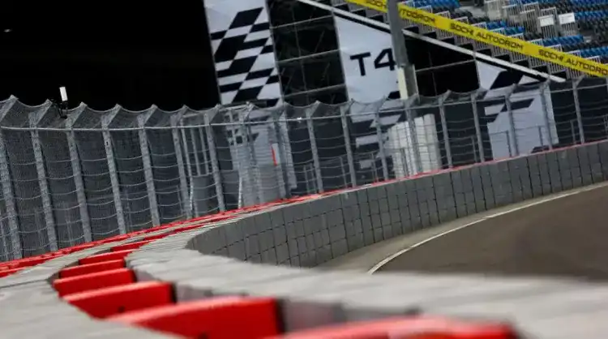

Rush Racing Rivals
Rush Racing Rivals
Tecpro : Barrières de protection utilisées sur les circuits de F1 et sont composées de mousse à densité modulable et renforcée par une double feuille métallique. Il dispose d’une capacité d'absorption très importante.
GPDA : Le GPDA est l’association des pilotes de grand prix de Formule 1, elle existe depuis 1961 et a un rôle consultatif pour les questions liées à la sécurité de la Formule 1.
BAFTA : Les British Academy of Film and television Awards sont l’équivalent Britannique des oscars du cinéma Américain et les Césars du cinéma Français
Grammy Award : Les Grammy Award sont des récompenses qui sont décernée depuis 1958 chaque année au Etats Unis par la National Academy of Recording Art and Science qui honore les meilleures artistes et technicien dans le domaine musicale